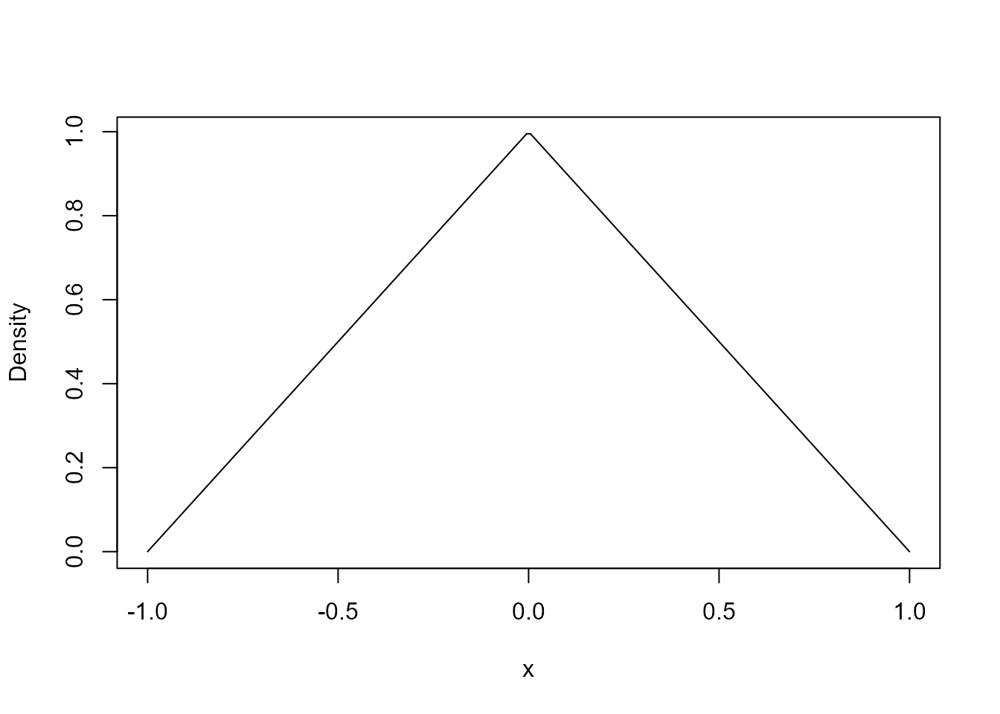
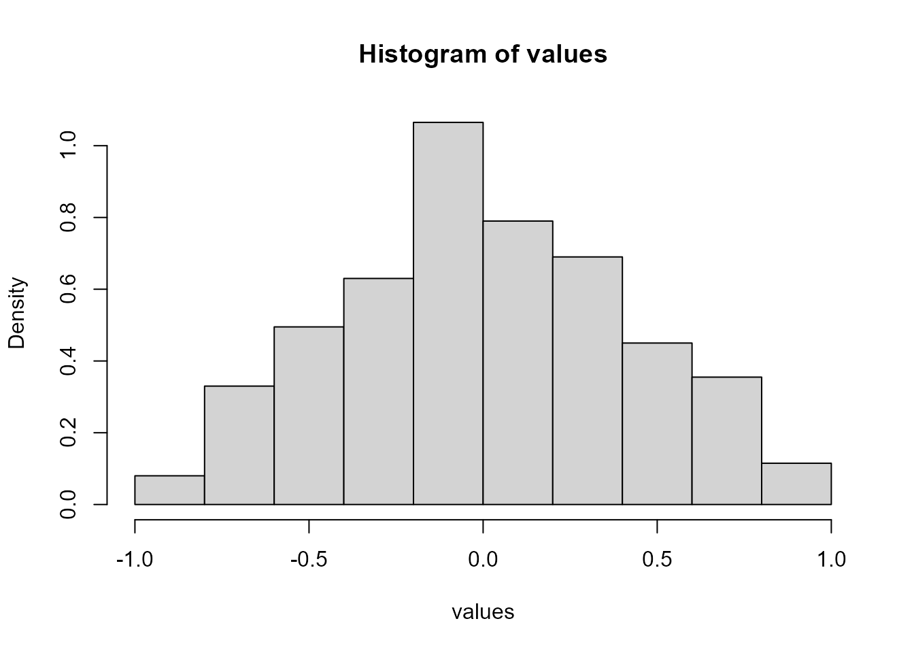

Density, quantile function, and random generation for the triangular distribution.
Usage
dtri(x, min = 0, max = 1, mode = (min + max)/2)
qtri(p, min = 0, max = 1, mode = (min + max)/2, lower.tail = TRUE)
rtri(n, min = 0, max = 1, mode = (min + max)/2)Arguments
- x
Numeric vector of values at which the density is evaluated.
- min
Lower limit of the distribution.
- max
Upper limit of the distribution.
- mode
Mode of the distribution. By default, the midpoint between
minandmax.- p
Numeric vector of probabilities.
- lower.tail
Logical. If
TRUE(default), probabilities are \(P[X \le x]\); otherwise, \(P[X > x]\).- n
Number of observations to generate.
Value
dtri() returns the density evaluated at x.
qtri() returns the quantiles corresponding to p.
rtri() returns a numeric vector of n random values.
Details
The triangular distribution is defined on the interval from min to max,
with its mode specified by mode.
The functions dtri(), qtri(), and rtri() provide the density,
quantile function, and random generation, respectively.
Examples
# Density of a symmetric triangular distribution
x <- seq(-1, 1, length.out = 200)
plot(
x,
dtri(x, min = -1, max = 1, mode = 0),
type = "l",
xlab = "x",
ylab = "Density"
)

# Generate random values
set.seed(1)
values <- rtri(1000, min = -1, max = 1, mode = 0)
hist(values, probability = TRUE)
